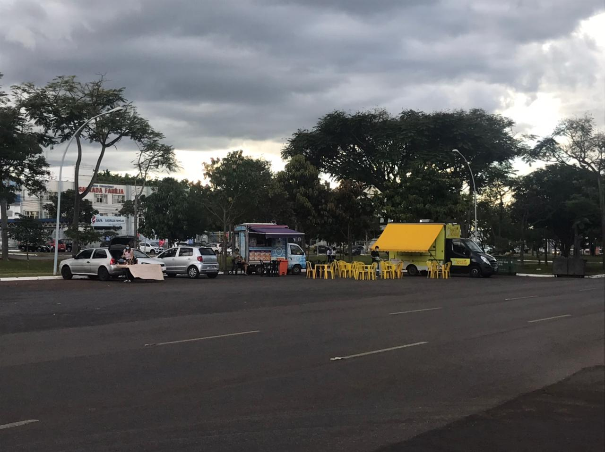
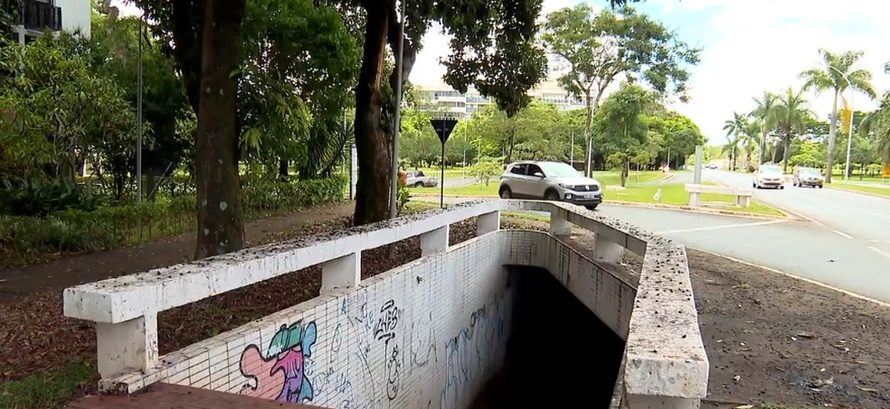
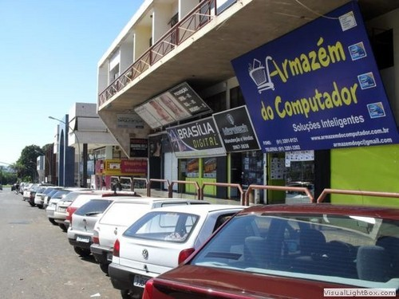
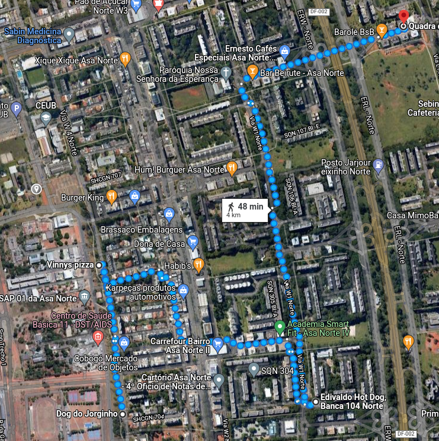

Atividade Deriva
Sobre
O flanêur é o principal elemento inspirador para esta atividade. A atividade consiste em realizar uma deriva fotográfica, em local aberto e ventilado na cidade ou mesmo em casa, para quem não pode ou não deseja sair.
Para essa atividade escolhi um caminho um pouco incomum passando por ciclovias, entrequadras e comércios dos mais variados. Sem mais delongas vamos inicar essa caminha sem rumo ou fim.
Árvore da 704

Essa árvore não é famosa, mas ela está nessa quadra a muito tempo. Já foi ameaçada de ser podada algumas vezes por está atrapalhando a passagem de pedestres. Porém, ela permaneceu lá por agradar os moradores locais.
Rede de food trucks

Eu passei essa ciclovia toda semana e vi ela ganhar mais vida com essa nova tendência de food trucks. Devo dizer que é ótimo ter uma lugar aberto para comer uma comida diferente, oque as vezes me dá forças para sair de casa e aproveitar as ruas.
Banca de revista

Isso é uma barraca de cachorro-quente, mas até o ano passado havia uma loja de produtos orgânicos e antes disso uma velha banca de revista. Acredito que essas bancas vem se tornando algo cada vez mais difícil de encontrar por conta da tecnologia e o desuso de revistas e afins.
Passarela do medo
| imagem 1 | imagem 2 |
|---|---|
|  |  |
Essa passarela subterrânea é famosa no plano. Já foi lugar de muitos crimes e outros assuntos preocupantes para não dizer nada explícito. Porém, muitas pessoas ainda a utilizam para evitar os carros que passam por cima.
Quadra da informáfica

Essa quadra é muito conhecida também. Se você precisa de assitência tecnica ou comprar algum eletrônico esse é o lugar. A quadra é uma polo de hardware e software para quem precisa de algo do mesmo.
A trilha

Versionamento
| Versão | Data | Modificação | Autor |
|---|---|---|---|
| 1.0 | 17/02/2022 | Criação da deriva | Victor Yukio |
| 1.1 | 17/02/2022 | Correção das iamgens | Victor Yukio |